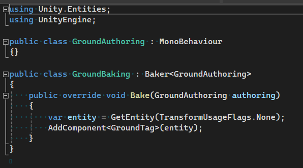

ECS Physics Event
How To Use
- Note: ECS is a completely different system than GameObject, this guide is only for people who have basic knowledge of ECS and understand the main steps in ECS.
- 1. Make sure you have installed all the packages including: com.unity.entities, com.unity.physics
- 2. After successfully installing com.unity.physics, select the Sample tab and import Custom Physics Authoring
- 3. Now create an Entity inside a Sub Scene, instead of using the default Collider component, use Physics Shape.
- 4. In the Collision Response field select Collide Raise Collision Events to detect collision events or Raise Trigger Events to detect Trigger events.
- 5. Give that Entity a component tag, ECS Physics Event needs it to differentiate between different types of entities.
- 
- 6. Create a partial class that extends HandleCollisionEventSystem or HandleTriggerEventSystem where T is the component tag of the entity.
- 7. Now you can override the Enter, Stay or Exit event methods with the params self, target. Where self is the entity receiving the event, target is the entity that caused the event.
- Note, use EntityCommandBuffer instead of EntityManager and do not use EntityCommandBuffer.Playback or EntityCommandBuffer.Dispose.

Close